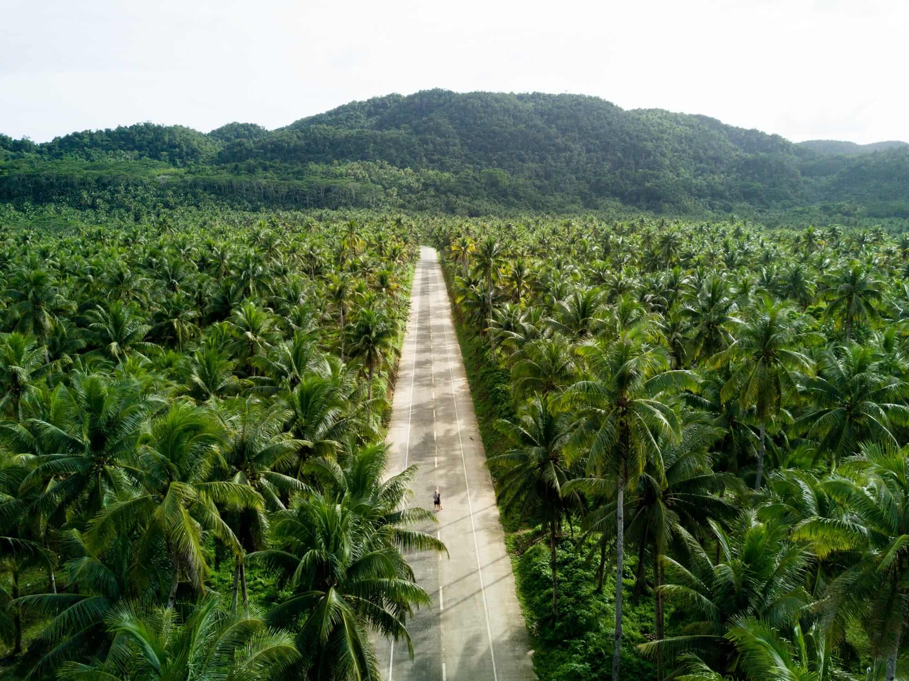

Named after a native mangrove, the surf capital of the Philippines is perfect for lovers of the great outdoors, whether you embrace adrenaline-fuelled adventure sports or gentler pursuits such as swimming in rock pools and caves. Life is centred on the white-sand beaches, so there’s also plenty of scope to lie back and relax. SURFING, Grab a board. For beginners, there’s Jacking Horse with its many surf schools; for pros, the thick, hollow ‘barrels’ at Cloud 9 have earnt it a place among the world’s top 10 waves. SUNRISE AND SUNSETS, Alternatively, admire the action – and watch the sun rise or set, or stargaze – from Cloud 9 boardwalk with its viewing area. ISLAND HOPPING, Go island-hopping to Guyam, Daku and Naked Island. SUGBA LAGOON, Head for mountain-rimmed Sugba Lagoon, where you’ll find a floating hut with a diving board plus SUP paddleboard and wooden raft hire. CLIFF JUMPING, Go cliff jumping and explore the caves and coves of Magpupungko Rock Pools, or try the Tarzan Jump on the Maasin River. Stop by the Maasin viewpoint to see the incredible sight of the island’s coconut plantation. TAYANGBAN CAVE POOLS, Go caving at Tayangban Cave Pools, swimming and floating by torchlight while bats flit around you. TAKTAK WATERFALL, Journey to Taktak Waterfall, for more cliff jumping, tree jumping and exploring, and to see the sun set from Santa Monica Pier or bask in the sun at the Alegria whitesand beach. BUCAS GRANDE’S LAGOON, Explore Bucas Grande’s lagoon with non-sting jellyfish, and do sea kayaking or cliff diving. Enjoy the water bungalow resorts in the island. PACIFICO BEACH,Get off the beaten track at pristine Pacifico Beach with its small surf-town feel and a sprinkling of resorts and homestays. On Sundays, join in with beach clean-ups in aid of disadvantaged children. LOCAL COMMUNITY MARKET Shop at LOKAL Tabo, a community market where local farmers and artisans sell their produce and crafts.